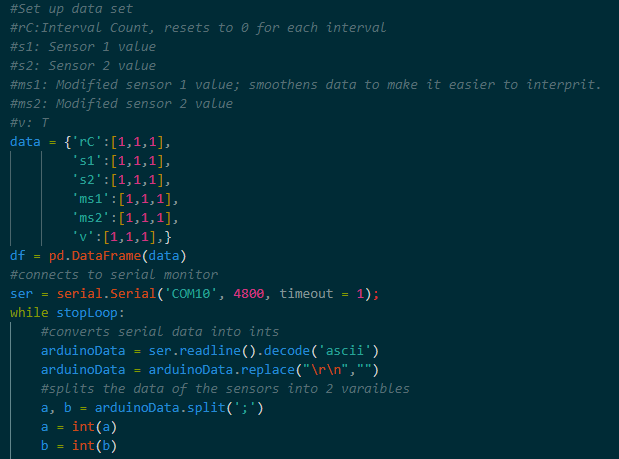

Electromyography Based Instrument / Rythm Game

Introduction
I first saw the surface electromyography sensors used in a prosthetic arm and I was amazed by the functionality that they could provide yet they were rarely used in any consumer products. Since then I have been interested in doing something with them. I also really love rhythm games, so I came up with a concept for the first audio-only rhythm game using these EMG pads.
Short explanation of the project
I plan of creating a device that works by using several EMGs fitted into a wearable sleeve that goes on the forearm. These sensors then detect the movements and taps of individual fingers using data processing from the Arduino. A headphone jack and a small buzzer are also connected for communication with the user.
The user will know what to do based on varying notes added to the audio indicating what finger to use as well as shorthand standing for a variety of things such as repeating a set note pattern or holding a note.
The main aspect of this would be its portability. The lack of a screen allows the user to play it discreetly anywhere without looking away from what they are doing. This gives it easier to use over mobile games although it will cost more.
I've also added an instrument function to the finger movements and different sounds and settings can be coded to the movement of the fingers. Examples include a drum set or piano.
Research
I knew very little about these sensors other than the fact that they were imprecise at tracking finger movement, so I had a lot of research ahead of me to try and find appropriate ways to interpret the data mostly coming from these papers.
Note: Most of these use 8 or so sensors on an arm while I am only using 2 (because they are expensive) so the data will alter slightly.
Kerber F., Puhl M., & Kruger A.(2017, September) User-Independent Real-Time Hand Gesture Recognition Based on Surface Electromyography. Retrieved from https://dl.acm.org/doi/abs/10.1145/3098279.3098553
Tang X., Lui Y., Lv C.,& Sun D. (2012, January) Hand Motion Classification Using a Multi-Channel Surface Electromyography Sensor. Retrieved from https://www.mdpi.com/1424-8220/12/2/1130
Zhang Y. & Harrison C. (2015 November) Tomo: Wearable, Low-Cost Electrical Impedance Tomography for Hand Gesture Recognition. Retrieved from https://dl.acm.org/doi/10.1145/2807442.2807480
I got a lot of important information from these sources:
1. A vector regression model provides the strongest correlation between strength and finger distinction.
2. The signal input is highly variable and changes based on muscle fatigue and intramuscular pH values. So, I need to create a calibration algorithm.
3. The data normally drops low and back up to the original value which considerably reduces the accuracy of the model. So I need to set up a function that averages the next value if it changes by more than 30%.
4. Tap gestures are the least accurate because they result in low EMG readings
Starting out
This is what the two sensors receive as I flex my arm. As you can see it is imprecise.
I've attached the sensors to these parts of my arm because this is where they give the most diverse values.
I need to make a lot of transformations in the data so I am planning to use Python to make it easier. I first tried using Teensy 4.0 with Circuit Python, but it can't run the EMG library, so I switch to sending the serial input of the Arduino into Python.
I'm using the Numpy, Pandas, and Matplotlib, libraries for the data interpretation and visualization.
I start by
The Instrument
In progress
The rhythm game
This is how I'm planning the music to work. A different set of 4 sounds will be played at the beginning of every song to indicate which fingers to use and the delay. In this audio clip, each of the 4 drum sounds is played 3 times and .25 seconds apart in the beginning. So, when the first drum sound is played later in the clip it indicates to the user that it is looking for input from the index finger in about .25 seconds. In that .25 seconds, another note with the song is played so the tap relates to the music. The final clip of the audio explains it the best.
Note that I am terrible at making music and the final product will sound a lot better
Return to Projects